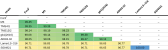
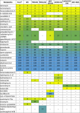

Comparative Genomics of Streptomyces silvae
This page summarizes the comparative genomic analysis of strains within the S. silvae clade, including Average Nucleotide Identity (ANI), genome-wide synteny analysis using progressiveMauve, and comparison of biosynthetic gene clusters (BGCs) based on antiSMASH 7.0.1.
Together, these analyses provide insight into genomic coherence, structural diversification, and biosynthetic potential across the investigated strains.
Dataset
- S. silvae For3T – type strain
- Streptomyces sp. M3
- S. silvae TMS4I1
- S. silvae TMS12I2
- Streptomyces sp. gb1(2016)
- Streptomyces sp. ADI93-02
- Streptomyces sp. LamerLS–316
- Streptomyces sp. SID4921
Average Nucleotide Identity (ANI)
Pairwise ANI analysis confirmed the assignment of all investigated strains to the species S. silvae. Even the lowest ANI value within the dataset (96.65%) remains clearly above the widely accepted 95% species threshold. This indicates a highly coherent species cluster with pronounced internal diversification.

ANI values support a taxonomically stable species group with high overall sequence conservation.
The genomes are closely related but not identical, indicating meaningful intraspecific diversification rather than species-level separation.
Genome Synteny and Structural Variation
To investigate genome architecture across the S. silvae clade, a whole-genome multiple alignment was performed using progressiveMauve. The alignment reveals extensive synteny across the analyzed genomes, together with local rearrangements, inversions, and strain-specific structural variation.

Streptomyces sp. LamerLS–316 and SID4921 show complete synteny, consistent with their 100% ANI identity.
Streptomyces sp. gb1(2016) exhibits the strongest rearrangements, fragmentations, and inversions within the clade.
Biosynthetic Gene Clusters (BGCs)
Biosynthetic gene clusters were identified using antiSMASH 7.0.1 in order to compare the secondary metabolic potential across the S. silvae clade. The results reveal both a highly conserved core set of BGCs and several strain-specific or weakly characterized clusters, indicating a combination of metabolic stability and diversification.

Core clusters conserved across all strains include isorenieratene, melanin, alkylresorcinol, ectoine, and desferrioxamine B/E, all with 100% similarity to known reference clusters.
The genomes of Streptomyces sp. gb1(2016) and ADI93-02 contain the highest number of unique or uncommon clusters, pointing to increased biosynthetic diversification.
Methods
- Read processing and genome assembly: Galaxy workflow
- Reference-guided scaffolding: RagTag
- Reference genome for scaffolding: Streptomyces sp. M3
- Genome annotation: RASTtk
- ANI calculation: FastANI
- Whole-genome alignment: progressiveMauve
- BGC prediction: antiSMASH 7.0.1